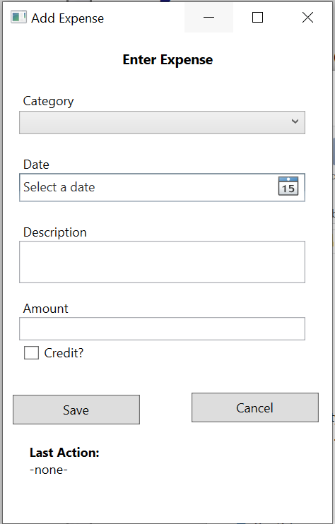

HOWDY, MY NAME IS MARY MARIAME VILLAMOR
Welcome to my portfolio webpage! I am a second year Computer Science student currently at John Abbott College. I was born on December 24th, 1998 in the Philippines in the city of Marilao. My family and I came to Canada When I was just four years old. I learned two other languages at a very young age, French and English. I grew up in the West Island and I hope to graduate and attend Conconrdia's Computer Games program by the end of the year 2021. I am a hardworking student and always eager to learn every semester.
Skills
My professional skills consist of performing well under pressure, working well in teams and individually, adapting and learning quickly in any working environment and always assuring excellent customer service.
Interests/Hobbies
I have a very wide range of interests and hobbies but the ones I put in a lot of time and effort are activties such as going to the gym, eating fast food, binge-watching movies and tv shows, playing soccer, etc. Some of my other hobbies that are somewhat considered weird consist of doing laundry and cleaning my room.
Education
Elementary
First, I attended Murielle-Dumont elementary school.
(click picture for more details)

High School
From 2011 to 2016, I went to a french public high school called Ecole Secondaire des Sources.
(click picture for more details)
College
I started back in the fall of 2017 at John Abbott and still currently attending.
(click picture for more details)
Projects
Below, you will find all the projects and assignments I've worked on since first semester in the Computer Science program.
For this assignment, the goal was to create an application that would take the user's input such as the category of the expense, the date, a description of the expense and the amount spent (and if credit was used or not). Once the user clicks on the save button, all the details of said expense will be saved.

The objective of the project was to create a website that would guide the user on how to use a Budget application. There are
sections of the page on the navigation bar that display the functions that can be done, i.e. Save file, Modify file, Create file, etc.
It also has a description of what the Budget application is as well as the display options for the overall report of the budget.
Poor Man's Paint was one of my favourite assignment, it would take the input of the row, of the column and the chosen
colour and the grid would reflect it. It's painting but in digital form. It's simple and fun!
Contact
Phone Number: 514.692.2498
School Email: 1678779@johnabbottcollege.net
Mio: Mary Mariame Villamor
Personal Email: mary_villamor88@hotmail.com